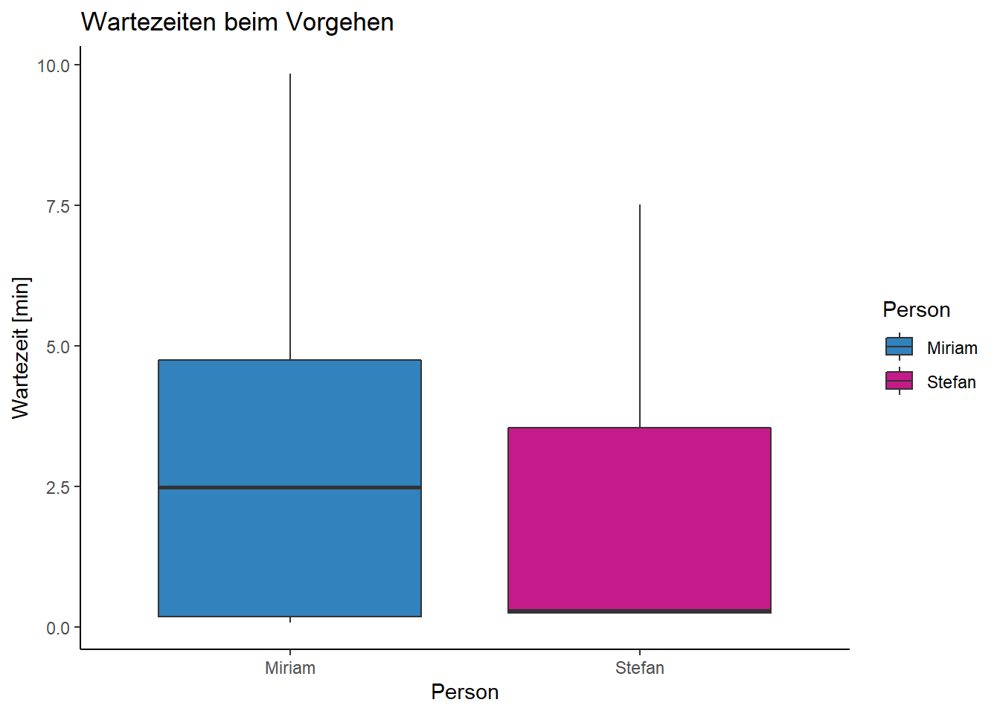

Wartezeit an ÖV-Haltestelem beim Reisebeginn
1 Hintergrund und Forschungsziele
(Zeit ist Geld (Effizienzsteigerung) versus Bewusst und Entspannt durchs Leben gehen ->Literatur, Öv CH superpünktlich, geringe Wartezeiten bzw Wartezeit selbstverschuldet)
Passagiere empfinden in der Regel das Warten an Haltestellen des Öffentlichen Verkehrs (ÖV) als äusserst lästig (van Hagen 2011). Die Schweizer ÖV sind international bekannt für ihre Pünktlichkeit (Kaindl 2022), wodurch die Länge der Wartezeit zu Beginn einer Reise meist selbstverschuldet ist. Nach Csiskos & Currie (2008) gibt es zwei verschiedene Arten von Fahrgastverhalten: Eine Gruppe kommt zufällig an, während eine andere Gruppe aktiv versucht, ihre Wartezeit zu minimieren, indem sie rechtzeitig zur geplanten Abfahrtszeit bei der Haltestelle ankommt. Evtl. Blabla zu AnalyseWerkzeugen, how fast is a cow und so.. oder erst in Diskussion
In unserer Projektarbeit möchten wir unsere tägliche Wartezeit an Haltestellen von öffentlichen Verkehrsmitteln (ÖV) untersuchen. Dabei wird ausschliesslich der Beginn einer Reise betrachtet. Folgende Fragen sollen anhand zweier leicht unterschiedlicher Methoden beantwortet werden: • Wie oft reisen wir mit den ÖV? • Sind die Wartezeiten von Reise zu Reise unterschiedlich lang? • Wer verbringt durchschnittlich mehr Wartezeit an den Haltestellen? • Kommen unsere beiden methodischen Herangehensweisen zu den gleichen Resultaten?
2 Methode
2.1 Daten
Die Daten bestehen aus eigenen Bewegungsdaten, welche mit der Applikation Posmo Project (Datamap AG, Version 22.01.16, 2023) erfasst wurden. Daten wurden vom 03.05.23 bis 21.06.23 mit einer Frequenz der Lokalisierungsdaten von 10 Sekunden aufgenommen. Fand keine deutliche Bewegung statt, wurden die Datenpunkte durch Posmo automatisch entfernt. Diese Daten liegen als CSV-Datei vor und beinhalten u.a. Datum & Zeit („datetime”), x-Koordinaten („long_x”), y-Koordinaten („lat_y”) und Transportmodus („transport_mode”). Zusätzlich wird der Datensatz „Haltestellen des öffentlichen Verkehrs” vom Bundesamt für Verkehr (BAV) verwendet (QUELLE https://data.geo.admin.ch/ch.bav.haltestellen-oev/haltestellen-oev/haltestellen-oev_2056_de.csv.zip).
R: Vorbereitung
R: Libraries laden
R: Daten einlesen
Code
# Daten von Stefan (ab 29.04.2023)
stefan <- read_delim("posmo_Stefan_23-05-03_06-21.csv", delim = ",")
stefan$person <- "Stefan"
# Daten von Miriam (ab xx.05.2023)
miriam <- read_delim("posmo_Miriam_23-05-03_06-21.csv", delim = ",")
miriam$person <- "Miriam"
# Schweizergrenze für Visualisierung
schweiz <- read_sf("schweiz.gpkg")
# Daten zusammenführen
posmo <- rbind(stefan, miriam)
# nicht relevante Spalten entfernen
posmo <- posmo |>
select(-user_id, -weekday, -place_name)
# NA finden & entfernen
posmo[!complete.cases(posmo), ] # Zeigt Zeilen mit NA an# A tibble: 999 × 5
datetime transport_mode lon_x lat_y person
<dttm> <chr> <dbl> <dbl> <chr>
1 2023-05-02 22:00:00 <NA> 8.70 47.1 Stefan
2 2023-05-03 03:25:11 <NA> 8.70 47.1 Stefan
3 2023-05-03 04:52:23 <NA> 8.70 47.1 Stefan
4 2023-05-03 05:47:14 <NA> 8.72 47.1 Stefan
5 2023-05-03 06:06:45 <NA> 8.74 47.1 Stefan
6 2023-05-03 06:45:46 <NA> 8.69 47.2 Stefan
7 2023-05-03 06:49:17 <NA> 8.70 47.2 Stefan
8 2023-05-03 11:59:45 <NA> 8.71 47.2 Stefan
9 2023-05-03 12:41:15 <NA> 8.67 47.2 Stefan
10 2023-05-03 13:02:35 <NA> 8.68 47.2 Stefan
# … with 989 more rowsCode
posmo <- drop_na(posmo)# Spalten mit NA entfernen
# Geometrie hinzufügen
posmo <- posmo |>
st_as_sf(coords = c("lon_x", "lat_y"), crs = 4326, remove = FALSE) |> # Geometrie hinzufügen
st_transform(2056) # transformieren CH1903+ LV95: 2056
# Schweizer Koordinaten zu sf-Tabelle hinzufügen
posmo_coordinates <- st_coordinates(posmo)
posmo <- cbind(posmo, posmo_coordinates)
# WGS Koordinaten entfernen
posmo <- posmo |>
select(-lon_x, -lat_y)
# Daten anschauen
ggplot(posmo, aes(X, Y, color = person))+
geom_path()+
coord_equal()+
scale_color_manual(values = c("Miriam" = "#3182bd", "Stefan" = "#c51b8a"))+
theme_void()
Code
posmo_filtered <- posmo |> # nur posmo daten innerhalb Rechteck um schweiz
st_crop(st_as_sfc(st_bbox(schweiz)))
# posmo_clipped <- st_intersection(posmo, schweiz) # nur posmo daten innerhalb von schweiz, geht lange...
ggplot()+
geom_sf(data = schweiz, fill= NA)+
geom_sf(data = posmo_filtered, aes(colour = person))+
scale_color_manual(values = c("Miriam" = "#3182bd", "Stefan" = "#c51b8a"))+
theme_void() # Achsen und Raster verschwinden
2.2 Datenvorverarbeitung
Die Posmo-App ist noch in der Entwicklung und zeichnet die Transportmodi nicht immer korrekt auf. Die Daten wurden deshalb von uns auf POSMO (datamap.io) überprüft und falls nötig die Transportart von Hand angepasst.
2.3 Methods
2.3.1 Herangehensweise «Geschwindigkeit»
Um den Start einer Reise zu finden, werden die Daten auf eine bestimmte Abfolge von Bewegungen (Segmente) durchsucht. Zu Beginn darf keine Bewegung stattfinden, man ist zum Beispiel zu Hause oder bei der Arbeit. Dafür muss zwischen zwei Datenpunkten eine Zeitdifferenz über dem gewählten Schwellenwert von zehn Minuten liegen. Die restlichen Datenpunkte werden anhand der Geschwindigkeit in Segmente mit langsamer oder schneller Bewegung eingeteilt. Als langsam werden Bewegungen kleiner als 45 km/h klassifiziert. Bewegungen gleich oder grösser als 45 km/h werden als schnell klassifiziert.
R: G: Geschwindigkeit berechnen
R: G: Moving Window
R: G: Einteilung stay/slow/fast
Um den Start einer Reise zu finden, muss folgende Abfolge der Segmente vorliegen:
- keine Bewegung (Person über längere Zeit (difftime >10 min) am selben Ort)
- langsame Bewegung (Gehen/Fahrrad)
- schnelle Bewegung (ÖV)
Die Wartezeit kann anschliessend für alle gefundenen Events berechnet werden (difftime (min(Segment schnell), max(Segment langsam))).
R: G: Evente finden
[1] datetime_slow transport_mode_slow person_slow
[4] velocity_text_slow haltestelle_x_slow haltestelle_y_slow
[7] id datetime_fast transport_mode_fast
[10] person_fast velocity_text_fast haltestelle_x_fast
[13] haltestelle_y_fast check
<0 Zeilen> (oder row.names mit Länge 0) [1] "datetime_slow" "transport_mode_slow" "person_slow"
[4] "velocity_text_slow" "haltestelle_x_slow" "haltestelle_y_slow"
[7] "id" "datetime_fast" "transport_mode_fast"
[10] "person_fast" "velocity_text_fast" "haltestelle_x_fast"
[13] "haltestelle_y_fast" "check" Die räumlichen Startpunkte der Reisen wurden mit den ÖV-Haltestellen aus dem Datensatz „Haltestellen des öffentlichen Verkehrs” validiert, wodurch Reisen mit dem Auto wegfallen. Dafür wurde ein Buffer von 100 Metern um ÖV-Haltestellen mit den Positionsdaten der Wartezeit verschnitten.
R: G: Evente validieren

R: G: Velocity: Wartezeit berechnen
###2.3.2 Herangehensweise «Klassifizierung»
Um zu validieren, wie gut unsere geschwindigkeitsabhängige Methode funktioniert, machen wir eine zusätzliche Analyse mit den Angaben der Transportmodi von Posmo.
R: T: Vorgehen “Transportmodus”
R: T: Einteilung stay/slow/public
Dabei werden die Daten auf eine bestimmte Abfolge anhand des angegebene Transportmodus durchsucht.
- keine Bewegung (Person über längere Zeit (difftime >10 min) am selben Ort)
- Transportmodus Walk/Bike
- Transportmodus Bus/Train/Tram
Die Wartezeit kann anschliessend für alle gefundenen Events berechnet werden (difftime (min(Segment schnell), max(Segment langsam))).
R: T: Evente finden
[1] "datetime_slow" "transport_mode_slow" "person_slow"
[4] "X_slow" "Y_slow" "time_slow"
[7] "Moving_slow" "moving_class_slow" "id"
[10] "datetime_public" "transport_mode_public" "person_public"
[13] "X_public" "Y_public" "time_public"
[16] "Moving_public" "moving_class_public" 2.4 Probleme und Grenzen
Bei der Herangehensweise «Geschwindigkeit» sich durch das setzen des Schwellenwerts für die Geschwindigkeit ein Problem. Wird der Schwellenwert zu tief gesetzt, können Bewegungen auf dem Weg zu der Haltestelle bereits als schnelle Bewegung eingestuft werden, obwohl wir diese als langsame Bewegungen haben möchten. Ein Beispiel: Stefan geht oft mit dem Fahrrad zur ÖV-Haltestelle und erreicht dabei Geschwindigkeiten über 40 km/h. Deshalb wurde der Schwellenwert auf 45 km/h gesetzt. Nun kann es aber sein, dass das öffentliche Verkehrsmittel beim Start der Reise langsam fährt und diese Bewegung als langsame Bewegung eingestuft wird. Dies hat zur Folge, dass sich die Wartezeit auf 15 Sekunden, also die Zeit zwischen zwei Datenpunkten beschränkt und nicht der Wahrheit entspricht. Die Daten werden verfälscht.
Bei der Herangehensweise «Klassifizierung» sind wir auf die Qualität von Posmo angewiesen. Den Transportmodus können wir manuell anpassen, die Segmente sind aber relativ fix (Erfahrungen haben gezeigt, dass die Funktion «split segment» nicht einwandfrei funktioniert). Es kam einige Male vor, dass langsame und schnelle Bewegungen am Start einer Reise als ein Segment dargestellt wurde. Der Transportmodus war dann entweder Bus, Train oder Tram. Da dadurch eine Segment der Transportmodus Walk oder Bike fehlte, wurde auch kein Start einer Reise erkannt. Dies ist ein Verlust eines Datenpunktes aber keine Verfälschung der Daten.
Aufgrund der Frequenz der Lokalisierung, können die Wartezeiten nur auf 10 Sekunden genau sein.
3 Resultate
R: G: Visualisierung

Two Sample t-test
data: wartezeit by person
t = 1.6571, df = 58, p-value = 0.1029
alternative hypothesis: true difference in means between group Miriam and group Stefan is not equal to 0
95 percent confidence interval:
-0.2263252 2.4030109
sample estimates:
mean in group Miriam mean in group Stefan
3.005200 1.916857 


R: T: Visualisierung

[1] 2.881176 Group.1 x
1 Miriam 3.316162
2 Stefan 2.605128 Group.1 x
1 Miriam 8.35
2 Stefan 9.65 Group.1 x
1 Miriam 0.01666667
2 Stefan 0.03333333 Min. 1st Qu. Median Mean 3rd Qu. Max.
0.01667 0.16667 3.00000 2.88118 5.01667 9.65000 


4 Diskussion
Die Herangehensweise «Geschwindigkeit» zeigt auf, dass die Transportmodi nicht einzig aufgrund deren Geschwindigkeit eingeteilt werden können. Die Daten werden verfälscht und können nicht interpretiert werden. Die Herangehensweise «Klassifizierung» ergibt deutlich bessere Daten. Bei diesem Vorgehen waren wir aber darauf angewiesen, dass wir bereits vorgegebene Segmente hatten und diese nur noch klassifizieren oder validieren mussten. Dies ist Zeitintensiv und für grössere Datensätze nicht denkbar. So können auch nur Daten bearbeitet werden, wovon man weiss, welcher Transportmodus verwendet wurde.
Um die Auswertung auch auf grössere und fremde Datensätze auszuweiten, wäre eine Verbesserung der Erkennung des Transportmodus von Vorteil. Busse und Trams wurden zum Beispiel immer als Autos klassifiziert. Hierfür wäre vielleicht ein Abgleich mit Datensätzen des öffentlichen Verkehrs möglich. Zudem gab es manchmal Segmente, bei welchen der Transportmodus als unbekannt gesetzt wurde. Dennoch würde eine entsprechende Fragestellung, welche sich nur auf den Zugdaten (inkl. Walk und Bike) bezieht bereits mit der jetzigen Erkennung der Transportmodi relativ gut funktionieren.
5 Literatur
Csikos, D., & Currie, G. (2008). Investigating Consistency in Transit Passenger Arrivals: Insights from Longitudinal Automated Fare Collection Data. Transportation Research Record, 2042(1), 12–19. https://doi.org/10.3141/2042-02
Kaindl, F. (2022). Reisen mit der Bahn: In welchen Ländern die Züge besonders pünktlich sind. Merkur.de https://www.merkur.de/reise/zuege-puenktlich-fernverkehr-bahn-europa-schweiz-daenemark-niederlande-zr-91977341.html#:~:text=In%20der%20Schweiz%20fahren%20Z%C3%BCge%20am%20p%C3%BCnktlichsten%20Am,viele%20Gedanken%20%C3%BCber%20Versp%C3%A4tungen%20innerhalb%20des%20Landes%20machen.